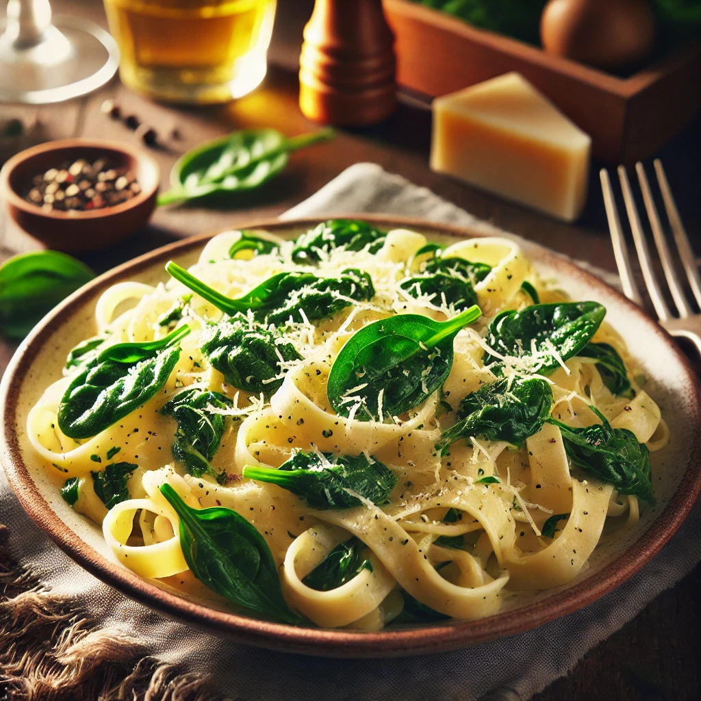

Liste aller Tutorials
Tagliatelle Spinaci

Erschienen am: 18.07.2024
Dauer: 00 Std. 12 Min.
Beschreibung:
Barilla Tagliatelle folgt allen Regeln der Pastakunst, ist rau und porös
und verbindet sich perfekt mit Saucen. Der Spinat verleiht eine besondere Note.
Kartoffelgratin

Erschienen am: 25.05.2024
Dauer: 00 Std. 30 Min.
Beschreibung:
Dieses einfache und schnelle Gratin kann komplett vorbereitet und später überbacken werden.